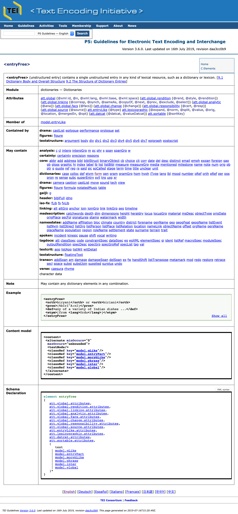

Lecciones en TTHub
Las Guías directrices de la Text Encoding Initiative, su manejo y su traducción al español1
Susanna Allés Torrent
2019

I. Introducción
Esta breve lección tiene como objetivo familiarizarse y aprender a manejar las Guidelines o Guías directrices (GD) de la Text Encoding Initiative.
La Text Encoding Initiative se sustenta en primer lugar en las Guías directrices que establecen un modelo concreto de codificación. Estas pautas son publicadas por el mismo Consorcio, en acceso abierto, en su página oficial. La versión actual es la P5 (donde P corresponde a “Proposal”) y se remontan al año 2007, aunque cada pocos meses la versión es actualizada con pequeñas mejoras. Su problema principal es que no son muy amigables, si se considera que su edición en papel llega casi a las 2.000 páginas. Aún así, constituyen el núcleo de cualquier trabajo en TEI, y su consulta es siempre inevitable.
Empecemos con la definición que ofrece la misma página web del Consorcio TEI:
| English | Español |
|---|---|
| The TEI Guidelines for Electronic Text Encoding and Interchange define and document a markup language for representing the structural, renditional, and conceptual features of texts. They focus (though not exclusively) on the encoding of documents in the humanities and social sciences, and in particular on the representation of primary source materials for research and analysis. These guidelines are expressed as a modular, extensible XML schema, accompanied by detailed documentation, and are published under an open-source license. The Guidelines are maintained and developed by the TEI Consortium, through its Technical Council, with the support and participation of the TEI community. | Las Guías directrices TEI para la codificación y el intercambio de textos electrónicos define y documenta un lenguaje de marcado para la representación de los rasgos estructurales, de presentación y conceptuales de los textos. Estas se centran, aunque no exclusivamente, en la codificación de documentos en Humanidades y Ciencias Sociales, y en particular en la representación de fuentes primarias para la investigación y el análisis. Estas Guías directrices se expresan a través de módulos, de esquemas XML extensibles, acompañadas por una documentación detallada, y son publicadas bajo una licencia de acceso abierto. Las Guías directrices son mantenidas y desarrolladas por el Consorcio TEI, a través del Consejo técnico, con el apoyo y la participación de la comunidad TEI. |
De esta definición podemos establecer, pues, diferentes puntos:
- Las Guías directrices pretenden definir un modelo concreto de codificación basado en el lenguaje XML.
- El modelo se acompaña de una documentación detallada que razona y ejemplifica el tipo de codificación para cada una de las fenomenologías textuales.
- Su objetivo principal es el de representar los rasgos de la estructura, de la presentación y de la semántica textuales.
- Es un modelo destinado especialmente a documentos procedentes de las disciplinas en Humanidades y Ciencias Sociales y, sobretodo, pensado para la codificación de fuentes primarias para su análisis, procesamiento, edición y explotación.
- Establece un sistema modular donde cada uno de los módulos define una serie de fenomenologías textuales con soluciones específicas.
- Todo documento TEI se basa en un esquema XML.
- Es un sistema de código abierto y por tanto tenemos acceso de manera gratuita.
- Las Guías directrices se sostienen gracias a 1) el Consorcio TEI, 2) el Technical Council, y 3) la comunidad de usuarios.
Veamos pues de qué manera estas Guías directrices documentan el modelo en su página oficial.
La sección que ahora nos interesa es la que concierne a las directrices para la codificación y el intercambio de textos electrónicos. Esta documentación se debe concebir como una especie de manual, de recomendaciones y de buenas prácticas para la codificación de los textos en TEI; cuanto más familiarizados uno esté con las Guías directrices, más agilidad tendrá para concebir un marcado concreto para un determinado fenómeno textual o lingüístico o del tipo que sea.
Las Guías directrices pueden descargarse en diferentes formatos, pero lo más habitual -debido al volumen de las mismas- es hacerlo en su versión HTML en inglés o parcialmente en español.
La página se estructura en cuatro bloques que en realidad reflejan la estructura de todo documento TEI:
- “Front Matter” o Material preliminar: corresponde a lo que sería el elemento
<front>que puede situarse antes del elemento<text>y suele contener informaciones complementarias, tales como los prólogos. Así, en esta sección encontraréis informaciones varias sobre las diferentes versiones, la codificación de los caracteres, pero sobretodo una “Gentle Introduction to XML”, una introducción al lenguaje XML que os recomiendo vivamente que leáis si no lo habéis hecho ya. - “Back Matter” o Material final: correspondería al elemento
<back>y aquí encontraréis diversos apéndices, como por ejemplo la lista de todos los elementos existentes en TEI, en un primer momento clasificados por orden alfabético, y a continuación según los módulos diferentes. ¡Eso os dará una idea del conjunto! - “Text Body” o Cuerpo del texto: correspondería al elemento
<text>y es la parte más importante pues es la que describe cada uno de los veintiún módulos. - “TEI Sourcecode” o código fuente TEI: este apartado contiene informaciones e indicaciones para utilizar el repositorio TEI en GitHub, una subversión del mismo, y un apartado dedicado a la recopilación de “bugs” o errores eventuales que puedan darse en la infraestructura TEI; hay también una lista de peticiones (por ejemplo, si alguien considera necesario la inclusión de un elemento que todavía no existe).
Cada proyecto de codificación, pues, debe crear su propio esquema a partir de una combinación de los módulos obligatorios y los módulos optativos. En total disponemos de veintiún módulos: cuatro son obligatorios (tei, core, header, textstructure), mientras que los otros son optativos en función de las necesidades del proyecto.
Los módulos obligatorios son:
| Nombre del Módulo | Identificador público formal | Definición en las GD |
|---|---|---|
| core | Common Core | 3. Elements Available in All TEI Documents |
| header | Common Metadata | 2. The TEI Header |
| tei | TEI Infrastructure | 1. The TEI Infrastructure |
| textstructure | Default Text Structure | 4. Default Text Structure |
Los módulos optativos son:
| Nombre del Módulo | Identificador público formal | Definición en las GD |
|---|---|---|
| analysis | Analysis and Interpretaion | 17. Simple Analytic Mechanisms |
| certainty | Certainty and Uncertainty | 21. Certainty, Precision, and Responsibility |
| corpus | Metadata for Language Corpora | 15. Language Corpora |
| dictionaries | Print Dictionaries | 9. Dictionaries |
| drama | Performance Texts | 7. Performance Texts |
| figures | Tables, Formulae, Figures | 14. Tables, Formulae, Graphics and Notated Music |
| gaiji | Character and Glyph Documentation | 5. Characters, Glyphs, and Writing Modes |
| iso-fs | Feature Structure | 18. Features Structures |
| linking | Linking, Segmentation, and Alignment | 16. Linking, Segmentation, and Alignment |
| msdescription | Manuscript Description | 10. Manuscript Description |
| namesdates | Names, Dates, People, and Places | 13. Names, Dates, People, and Places |
| nets | Graphs, Networks, and Trees | 19. Graphs, Networks, and Trees |
| spoken | Transcribed Speech | 8. Transcriptions of Speech |
| tagdocs | Documentation Elements | 22. Documentation Elements |
| textcrit | Text Criticism | 12. Critical Apparatus |
| transcr | Transcription of Primary Sources | 11. Representation of Primary Sources |
| verse | Verse | 6. Verse |
Cada módulo define una serie de etiquetas propias (de un total de aproximadamente 500 elementos), así como las clases de modelo y de los atributos.
Cada módulo tiene una presentación general, donde se explica el funcionamiento de cada uno de sus elementos. Por ejemplo, si estamos interesados en los diccionarios, tenemos a nuestra disposición la explicación general sobre diccionarios en las Guías directrices, y si necesitamos uno de sus elementos podemos acceder a su información individualizada, pongamos por caso <entryFree> (véase Figura 1).

Cada uno de los elementos, contiene siempte:
- una definición
- el módulo de pertenencia
- la clase de atributos que puede conllevar
- la clase de modelo del que forma parte
- la indicación de los elementos donde puede ser utilizado
- la serie de elementos que puede contener en su interior
- el fragmento de código del esquema (RelaxNG) que define su comportamiento
- un ejemplo concreto, con la posibilidad de recuperar todos los ejemplos existentes con ese elemento en las Guías directrices (opción “Show all”).
En la lección sobre Tipologías tendremos tiempo de trabajar con algunos de estos módulos.
Como cabe imaginar, el mismo Consorcio prevé que la actualización constante, especialmente la evolución de P4 a P5, suponga cambios considerables. Por ello, ofrece consejos de migración y una Wiki sobre cuestiones relativas a TEI, entre ellas la migración entre versiones para aquellos proyectos que utilizaron la versión anterior de TEI P5.
II. Estructura y formatos de publicación
Las Guías directrices se fundamentan sobre el principio del acceso abierto, por ello todo lo que las rodea se publica bajo esa licencia y puede descargarse por completo:
- Esquemas
- Código fuente
- Documentación
Las Guías directrices pueden descargarse en diferentes formatos:
Una de las opciones más interesantes es la posibilidad de instalarnos una copia de las Guías directrices en nuestro ordenador personal a través de SVN (Version Control System), pero ello está indicado especialmente para que los usuarios más avanzados puedan probar los últimos desarrollos y proveer feedback sobre lo que piensan y como deberían desarrollarse. Lo que sí, en cambio, es muy útil es la descarga de la última versión de las Guías directrices, disponible aquí. Se puede descargar una copia y conservarla en su ordenador para que pueda ser consultada incluso cuando no se esté en línea.
III. Recursos
En el apartado de las Guidelines, a parte de las Guías propiamente dichas, encontramos otra serie de materiales y recursos relacionados que conviene conocer. En la página se encuentran las siguientes secciones:
-
Personalización de las Guidelines: Las Guías directrices están concebidas para ser personalizadas, de manera que cada proyecto e incluso disciplina puede crear una versión personalizada y adaptada a las necesidades y prácticas particulares. TEI ofrece una herramienta, llamada ROMA, que permite elegir los módulos necesarios para nuestro proyecto y personalizar así nuestro esquema (añadiendo y eliminando elementos y atributos no utilizados, y estableciendo valores predeterminados para los atributos, etc.)
-
Internacionalización: Las Guías directrices están todavía en curso de traducción en otras lenguas diferentes del inglés. Este apartado ofrece información sobre el estado de dichas traducciones que son llevadas a cabo de manera espontánea y gratuita. En el caso del español, aunque se indique que disponemos de un “stable relase”, lo cierto es que no es completa y algunas partes, como la introducción a XML, carece todavía de una traducción.
-
TEI mantiene un repositorio en GitHub que gestiona el desarrollo y la distribución de la versión TEI más actualizada. Los ficheros originales de la última versión de las Guías directrices y los materiales relacionados (como las hojas de estilo XSLT, la herramienta Roma, o las traducciones) pueden ser descargados en este portal.
-
Archivo TEI. El consorcio es consciente que muchos de los proyectos elaborados con TEI se hicieron con versiones anteriores a la actual, por ello existe un archivo o repositorio con todas las versiones anteriores de las Guías directrices; conservan incluso las versiones anteriores de la página web TEI.
-
“Getting Involved”: las Guías directrices son concebidas como un proyecto colaborativo donde es imprescindible la colaboración y la participación activa tanto de sus miembros como de sus usuarios. En este apartado se detallan las diferentes maneras en que la comunidad TEI (miembros y no miembros) pueden contribuir.
-
Licencia y Citación. TEI informa sobre los términos de la licencia de las Guías directrices y ayuda a citarlas de una manera correcta, para que podamos agregar la información legal en nuestro proyecto.
-
Aprende TEI. TEI mantiene una lista extremadamente útil de recursos y materiales que ayudan a iniciarse en el estudio de las de TEI, incluyendo enlaces a talleres, documentación de proyectos y tutoriales en línea.
Cita propuesta:
Allés Torrent, Susanna (2019). “Las Guías directrices de la Text Encoding Initiative, su manejo y su traducción al español”. TTHUB. Text Technologies Hub: Recursos sobre tecnologías del texto y edición digital. https://tthub.io/aprende/l4-guias/ DOI: 10.5281/zenodo.3531573
-
Estos materiales fueron creados en el marco del certificado de Experto Universitario en Humanidades Digitales, ofrecido desde 2014 por el Laboratorio de Innovación en Humanidades Digitales de la Universidad Nacional de Educación a Distancia. ↩